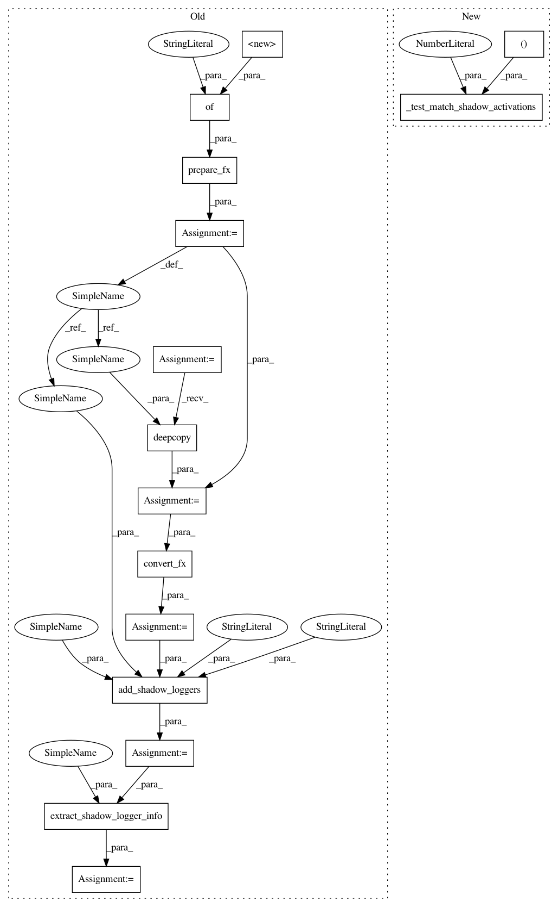

986e3c0a00677355c1edbd89a959264fa0aea1c4,test/quantization/test_numeric_suite_fx.py,TestFXNumericSuiteCoreAPIs,test_add_shadow_loggers_mod,#TestFXNumericSuiteCoreAPIs#,847
Before Change
nn.Conv2d(1, 1, 1),
nn.Conv2d(1, 1, 1),
).eval()
mp = prepare_fx(m, {"": torch.quantization.default_qconfig})
mp(torch.randn(1, 1, 4, 4))
// TODO(future PR): prevent the need for copying here, we can copy the
// modules but should reuse the underlying tensors
mp_copy = copy.deepcopy(mp)
mq = convert_fx(mp_copy)
mp_shadows_mq = add_shadow_loggers("fp32_prepared", mp, "int8", mq, OutputLogger)
// TODO(before land): test both scripted and non-scripted
mp_shadows_mq = torch.jit.script(mp_shadows_mq)
// calibrate
input_fp32 = torch.randn(1, 1, 4, 4)
mp_shadows_mq(input_fp32)
// check activation result correctness
act_compare_dict = extract_shadow_logger_info(
mp_shadows_mq, OutputLogger)
self.assertTrue(len(act_compare_dict) == 2)
self.assert_ns_compare_dict_valid(act_compare_dict)
@override_qengines
After Change
nn.Conv2d(1, 1, 1),
nn.Conv2d(1, 1, 1),
).eval()
self._test_match_shadow_activations(
m, (torch.randn(1, 1, 4, 4),), results_len=2)
@skipIfNoFBGEMM
def test_add_shadow_loggers_fun(self):
class M(nn.Module):
In pattern: SUPERPATTERN
Frequency: 3
Non-data size: 15
Instances
Project Name: pytorch/pytorch
Commit Name: 986e3c0a00677355c1edbd89a959264fa0aea1c4
Time: 2021-03-12
Author: vasiliy@fb.com
File Name: test/quantization/test_numeric_suite_fx.py
Class Name: TestFXNumericSuiteCoreAPIs
Method Name: test_add_shadow_loggers_mod
Project Name: pytorch/pytorch
Commit Name: 986e3c0a00677355c1edbd89a959264fa0aea1c4
Time: 2021-03-12
Author: vasiliy@fb.com
File Name: test/quantization/test_numeric_suite_fx.py
Class Name: TestFXNumericSuiteCoreAPIs
Method Name: test_add_shadow_loggers_fun
Project Name: pytorch/pytorch
Commit Name: 986e3c0a00677355c1edbd89a959264fa0aea1c4
Time: 2021-03-12
Author: vasiliy@fb.com
File Name: test/quantization/test_numeric_suite_fx.py
Class Name: TestFXNumericSuiteCoreAPIs
Method Name: test_add_shadow_loggers_mod
Project Name: pytorch/pytorch
Commit Name: 986e3c0a00677355c1edbd89a959264fa0aea1c4
Time: 2021-03-12
Author: vasiliy@fb.com
File Name: test/quantization/test_numeric_suite_fx.py
Class Name: TestFXNumericSuiteCoreAPIs
Method Name: test_logging_inputs